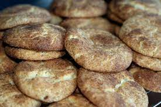

Snickerdoodle Cookies

Description
This is my grandma's famous snickerdoodle cookie recipe. She used to make these all the time for us when we were kids. They never lasted more than a day!
Ingredients
Cookie
- 1 1/2 cups white sugar
- 1 cup softened butter
- 2 eggs
- 2 1/2 cups all-purpose flour
- 2 teaspoons cream of tartar
- 1 teaspoon baking soda
- 1/2 teaspoon salt
Coating
- 2 tablespoons white sugar
- 2 teaspoons ground cinnamon
Directions
- Preheat oven to 400 degrees F (200 degrees C). Line a baking sheet with parchment paper or lightly grease.
- Beat 1 1/2 cups white sugar, butter, and eggs together in a bowl using an electric mixer until smooth and creamy.
- Combine flour, cream of tartar, baking soda, and salt in a separate bowl; stir into creamed butter mixture until dough holds together.
- Mix 2 tablespoons white sugar and cinnamon together in a bowl.
- Form dough into 2-teaspoon-size balls and roll in the cinnamon-sugar mixture. Place dough balls, about 2 inches apart, on the prepared baking sheet.
- Bake in the preheated oven on the center rack for 7 minutes. Allow cookies to cool on the baking sheet for 5 minutes before transferring to a wire rack.
Cook's Note
When removing cookies from the oven, they make look doughy still. By allowing them to continue to cook on the cookie sheet out of the oven prevents hard cookies.
Tips
For storing cookies, place cooled cookies in a plastic container or plastic bag with a piece or two of bread to keep cookies soft.